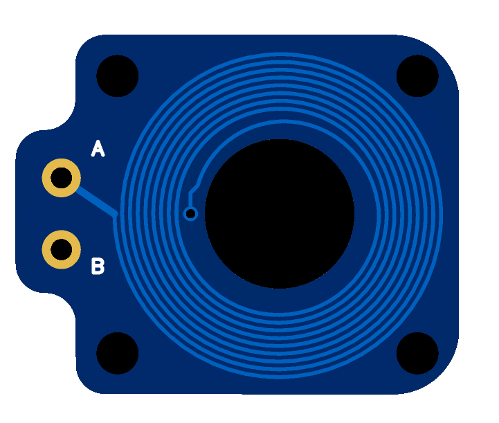
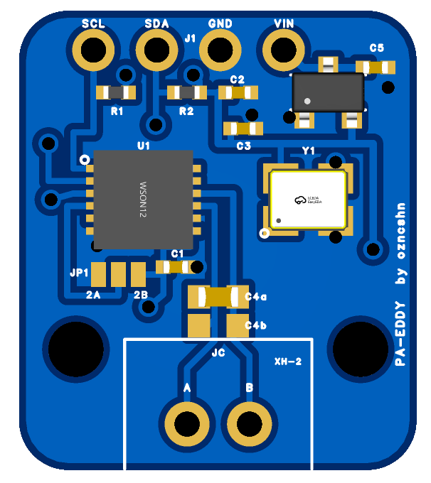

OznLab Sensor
Your hotend, measured.
This is a small eddy current coil sensor that monitors your hotend in real time by detecting microscopic movements of the heatsink.
By analyzing these tiny movements, it can calculate critical information such as pressure advance and automatically apply the correct value at the start of your print.
It can also measure your Z offset by tapping the nozzle on the bed, watch for nozzle clogs during every print, and do a lot more that makes your printer smarter and more reliable.
What it does
What you need
- The two boards: coil PCB and main PCB (assembled), plus two thin wires for the coil. You order them from JLCPCB with the board files (Gerber, BOM, CPL).
- A mount for the coil. The coil PCB is made for the RX toolhead, the RX toolhead is on Printables and the version with the sensor mount will be published there. Other toolheads: ask on Discord.
- A toolhead board with an I2C header. Tested on BTT EBB36 / EBB42 v1.1, v1.2 and GEN2.
- A soldering iron to solder a few pins: the JP1 address jumper and the coil wires.
- Klipper v0.13.0 or newer with Mainsail or Fluidd, and SSH access to the printer's computer. Z homing with the nozzle (optional) needs a Klipper from late May 2026 or newer, on the Pi and on the toolhead board.
The route
- Hardware: solder, mount and wire the two boards.
- Install: run the install script, paste the config.
- Setup: six short checks from the console.
- Print start: two blocks for your PRINT_START and PRINT_END.
- Tools: max flow, retraction, temperature, crash watch, nozzle mesh and homing.
Every step says what to do, what you should see, and what to try if you don't. In the GitHub repo: oznlab_sensor.py (the Klipper script) and config/oznlab_sensor.cfg (every option, commented).
2Hardware
2.1 The boards

14.87 × 12.07 mm · 0.8 mm thick

15.96 × 18.46 mm · 1.6 mm thick
Drag to rotate.
2.2 Solder the address jumper (JP1)
The sensor talks to the toolhead board over I2C, and every device on the same I2C port needs its own address. JP1 sets this sensor's address: bridge the centre pad to 2A or 2B with a blob of solder.
- Sharing the I2C port with a BTT Eddy: bridge the centre pad to 2B. The Eddy already uses the 2A address.
- Sharing the I2C port with another I2C device: look up its address and pick the pad it does not use.
- Nothing else on the I2C port: either one works. 2B matches the config in this guide.
| JP1 | in the config (step 3.2) |
|---|---|
| 2A | i2c_address: 42 |
| 2B | i2c_address: 43 |
2.3 Coil cable
Solder two wires from the coil pads to A and B on the main PCB. It does not matter which wire goes to A and which to B. Make them just long enough to reach.
2.4 Mount the coil
Mount the coil PCB facing the hotend's aluminium heatsink, close to it but not touching. The coil must not move or vibrate. The RX toolhead mount holds it without glue; on a mount of your own, glue it if needed.
Which side faces the heatsink? Either side works, the coil is on both layers of the PCB. Keep the side with the soldered wires away from the heatsink, so the wires stay out of the gap. If you flip the coil later, run the drive current step (4.2) again.
You check this for real in step 4.3: pushing the nozzle up must show up in the console.
2.5 Connect to the toolhead board
Fix the main PCB on the toolhead with the two M2 holes. Then four wires, SCL, SDA, GND and 5V, from the main PCB to the I2C header of the toolhead board.
| Board | I2C header | i2c_bus | |
|---|---|---|---|
| EBB36 / EBB42 CAN v1.1, v1.2 | tested | 1 = +5V 2 = GND 3 = PB3 (SCL) 4 = PB4 (SDA) | i2c3_PB3_PB4 |
| EBB36 / EBB42 GEN2 | tested | 5V, GND, PA7 (SCL), PA6 (SDA) | i2c3_PA7_PA6toolhead firmware from Aug 2025 or newer |
| EBB36 / EBB42 CAN v1.0 | not tested | 5V, GND, PB6 (SCL), PB7 (SDA) | i2c1_PB6_PB7 |
On v1.1 / v1.2, PB3 and PB4 are also the filament sensor pins, so do not define a filament sensor on them.
Other boards: connect SCL, SDA, 5V and GND to the board's I2C pins and set i2c_mcu / i2c_bus for those pins. Step 4.1 shows if the sensor is found.
With a BTT Eddy: connect both to the same header in parallel (SCL to SCL, SDA to SDA, GND to GND, 5V to 5V).
Wiring at a glance
click the diagram to enlarge
3Install
3.1 Install the script
Connect to the printer with SSH, as your normal user (no sudo), and run:
Run (SSH)
cd ~
git clone https://github.com/ozancs/oznlab-sensor.git
cd oznlab-sensor
./install.shYou should see
Linking oznlab_sensor.py into ..., Adding the update manager entry to moonraker.conf and Done. at the end. Mainsail and Fluidd now list oznlab_sensor in the Update Manager, so new versions arrive with one click.
If not
Klipper not found in /root/klipper | You used sudo. Run ./install.sh without it. |
Klipper not found in ... | Klipper lives somewhere else: KLIPPER_PATH=/path/to/klipper ./install.sh |
No moonraker.conf in ... | Several printers on one Pi (KIAUH). The installer prints the right folder: CONFIG_PATH=~/printer_1_data/config ./install.sh |
3.2 Add the section to printer.cfg
Paste this into printer.cfg. Change three lines if your setup differs:
i2c_mcu: the name of your toolhead board's[mcu ...]section. For[mcu EBBCan]it isEBBCan.i2c_bus: from the table in step 2.5.i2c_address: 43 for JP1 on 2B, 42 for 2A (step 2.2).
[oznlab_sensor hotend]
i2c_mcu: EBBCan
i2c_bus: i2c3_PB3_PB4
i2c_address: 43
data_rate: 200
tap_adjust_z: 0.04
pa_speed: 3.0
pa_duration: 1.5
clog_ratio: 2.0
runout_ratio: 0.25
confirm_windows: 3
confirm_time: 10.0
monitor_min_z: 0.5
clog_gcode: PAUSE
runout_gcode: PAUSE3.3 Change position_min in [stepper_z]
The tap moves slightly below zero, so this has to be negative. This is in your own [stepper_z] section in printer.cfg, not in the OznLab section. Find position_min there and set it to -1. If the line is missing, add it:
in [stepper_z]
[stepper_z]
# ... your other [stepper_z] lines stay as they are ...
position_min: -1If you skip this, step 4.1 reports it as a [FAIL].
3.4 Restart Klipper
Run (SSH)
sudo systemctl restart klipperYou should see
Klipper comes back to Ready in Mainsail / Fluidd, and OZNLAB_HELP in the console lists the commands.
If not
Unknown command: OZNLAB_HELP | install.sh from 3.1 did not run, or Klipper was restarted with FIRMWARE_RESTART. That does not load a new script; use the command above. |
Section 'oznlab_sensor hotend' is not a valid config section | Same as above: Klipper does not see the script. |
| Klipper error mentioning the MCU name | i2c_mcu does not match the name of your [mcu ...] section. |
Klipper error mentioning i2c_bus | The bus name does not exist on that MCU. Check step 2.5. |
oznlab_sensor.py changes later, run this restart again.4Setup
4.1 Health check
Everything from here is typed into the Mainsail / Fluidd console. Nothing moves in this step.
OZNLAB_SETUP goes one step further each time you run it and remembers where you are, even after SAVE_CONFIG restarts Klipper. Its steps 1 to 5 are steps 4.1 to 4.5 of this guide. To repeat or jump to a step, add STEP=, for example OZNLAB_SETUP STEP=3.
Run
OZNLAB_SETUPSame as OZNLAB_SETUP STEP=1, which runs this step again any time.
You should see
STEP 1/8 WIRING AND SENSOR [ OK ] LDC1612 answers (id 5449/3055) [ OK ] f0 = ... MHz, noise ... Hz rms, ... samples/s ... Everything answers.
Two [WARN] lines are normal at this point: reg_drive_current not set yet (fixed in 4.2) and PRINT_START does not call ... (fixed in step 5).
If not
[FAIL] sensor does not answer on I2C | Check the four wires against the wiring diagram in step 2, that JP1 is soldered, and that i2c_address matches JP1 (2B = 43, 2A = 42). |
[FAIL] wrong chip id | Another device already uses that address. Solder JP1 to the other pad and change i2c_address. |
[FAIL] no samples arrived | Restart Klipper (3.4) and run again. |
[WARN] f0 outside the usual 2-4 MHz | The coil is not connected. Check the solder joints on A, B and the coil pads. |
[FAIL] ... conversion errors | Do step 4.2. |
[WARN] noise ... is high | Check that the coil and its wires cannot move (2.4). |
[FAIL] [stepper_z] position_min | Do step 3.3. |
4.2 Drive current
Klipper sets how hard the coil is driven. Do this once, with the coil mounted in its final place: the right value depends on the distance to the heatsink.
Run
LDC_CALIBRATE_DRIVE_CURRENT CHIP=hotend
SAVE_CONFIGKlipper restarts after SAVE_CONFIG. Then:
OZNLAB_SETUPSame as OZNLAB_SETUP STEP=2, which runs this step again any time.
You should see
STEP 2/8 DRIVE CURRENT [ OK ] no conversion errors, drive current is fine.
If not
The sensor reported errors | Run the calibration again. If it stays, check the coil solder joints and the mount (2.3, 2.4). |
4.3 Does the coil feel the hotend?
The console listens for 25 s. Keep your hands off for the first 3 s, then push the nozzle up with a finger three times, short pushes.
Run
OZNLAB_SETUPSame as OZNLAB_SETUP STEP=3, which runs this step again any time.
You should see
oznlab watch: 25 s - hold still 3 s for calibration, then tap TAP #1 peak ... Hz slew ... Hz/s ... ms TAP #2 ... TAP #3 ...
If not
No TAP lines | The coil does not see the heatsink move. Check that it faces the aluminium heatsink, is close to it, and is fixed (2.4). |
PRESS lines instead of TAP | You held the push too long. It still shows the coil feels it; try shorter pushes. |
watch already running | Run OZNLAB_WATCH OFF=1, then again. |
4.4 Tap test and Z offset
G28), heat the nozzle to printing temperature, clean the tip, move over the middle of the bed.Run
OZNLAB_SETUP
SAVE_CONFIGSame as OZNLAB_SETUP STEP=4, which runs this step again any time.
The nozzle taps the bed a few times and sets the Z offset. SAVE_CONFIG keeps it and restarts Klipper.
You should see
STEP 4/8 TAP TEST AND Z OFFSET OznLab tap: z offset ... set (5 taps within ... mm) - SAVE_CONFIG to keep it
The within number is how far apart the taps were. The smaller the better; on our printer it is around 0.01 mm.
If not
Home first / Heat the nozzle | Do what it says, then run again. |
the taps disagree ... z offset NOT changed | Nothing was set, so skip SAVE_CONFIG. Clean the nozzle tip, wait a minute after heating, check that the coil cannot move, and run again. |
contact amplitude too small or no contact signature found | Check 4.3 first. If that is fine, the nozzle may not have reached the bed: check your Z endstop / probe height. |
TARGET=... is below [stepper_z] position_min | Do step 3.3. |
4.5 Pressure advance: measure
Run
OZNLAB_SETUPSame as OZNLAB_SETUP STEP=5, which runs this step again any time.
It extrudes a little filament in the air, about 10 s.
You should see
STEP 5/8 PRESSURE ADVANCE (measures the melt pressure rise, applies nothing) OznLab PA: measured ... (tau ... s) - not applied ... measured tau = ... s, so pa_scale = PATTERN_PA / ...
If not
no pressure signal | No filament in the nozzle, or the nozzle is not hot. |
no reliable measurement | Run it again. Check that filament comes out while it runs. |
no reliable measurement, and with OZNLAB_CALIBRATE_PA APPLY=0 VERBOSE=1 the lines say the rise overshoots and falls back | The extruder starts with a jerk, so the pressure build-up is not clean. Measure from the fall after the extruder stops instead: add pa_method: decay to [oznlab_sensor hotend], restart Klipper, then do 4.5 and 4.6 again. |
4.6 Pressure advance: pattern test
This is done once, to match the measurement to your slicer.
tap_adjust_z from 3.2 included. If your PRINT_START sets its own SET_GCODE_OFFSET Z=..., remove that line, it would replace it.- In OrcaSlicer: Calibration, Pressure Advance, Pattern. Print it with the filament and temperature you normally use.
- Find the cleanest line and read its PA value.
- Put your value in place of
<your_pa>and run:
OZNLAB_PA_SCALE PATTERN_PA=<your_pa> TYPE=<filament>
SAVE_CONFIGUse the filament type as the slicer names it, for example TYPE=PLA or TYPE=ASA. Each filament type gets its own scale (pa_scale_pla, pa_scale_asa ...). Repeat this step once for every filament type you print.
You should see
OznLab: pa_scale_asa ... (= ... / tau ...), for ASA - SAVE_CONFIG to keep it
This command only does the math. It does not print or move anything.
If not
run OZNLAB_CALIBRATE_PA first | Klipper was restarted after 4.5. Do 4.5 again, then this command. No need to print the pattern again. |
computed pa_scale ... is out of range | Check the value you typed, then do 4.5 again. |
OZNLAB_SETUP steps 6 to 8: Z homing with the nozzle (optional, step 6.6 of this guide), the bed mesh options (step 6.5) and the PRINT_START lines (next step).
5PRINT_START and PRINT_END
5.1 PRINT_START
First, so the sensor knows which filament is printing: in OrcaSlicer, Printer settings, Machine G-code, add this to the end of your PRINT_START line:
FILAMENT={filament_type[initial_extruder]}Then put this in your PRINT_START macro, after the nozzle has reached printing temperature and before the prime line. Replace PA_X and PA_Y with a spot over your purge bucket or any place where plastic can drop.
# no probe? load the nozzle mesh first (step 6.5)
#BED_MESH_PROFILE LOAD=default
OZNLAB_PRINT_START FILAMENT="{params.FILAMENT|default('')}" PA_X=300 PA_Y=300That one line tells the sensor the filament, measures pressure advance over the purge area, waits 15 s for the hotend to settle and taps the bed centre for the Z offset. TAP_X / TAP_Y pick another tap spot, SETTLE= another wait.
If a filament has no scale of its own yet, the console says so at the start of the print and the default pa_scale is used.
Then your prime line, and as the last lines of PRINT_START:
OZNLAB_MONITOR
#OZNLAB_CRASHRemove the # in front of OZNLAB_CRASH to turn on the crash watch (step 6.4). Prefer separate lines? OZNLAB_FILAMENT, OZNLAB_CALIBRATE_PA and OZNLAB_TAP SAVE=0 still work on their own.
5.2 PRINT_END and CANCEL_PRINT
Add this to both macros:
OZNLAB_PRINT_ENDSave and restart, then check that Klipper finds the calls:
OZNLAB_CHECKYou should see
OznLab Sensor check [PASS] ... [ OK ] PRINT_START calls CALIBRATE_PA, TAP and MONITOR
If not
[WARN] PRINT_START does not call: ... | The named command is missing from PRINT_START, or from the macros it calls. |
5.3 First print
Start any print and watch the console during PRINT_START.
You should see
OznLab PA: pressure advance ... set (was ...) OznLab tap: z offset ... set (5 taps within ... mm) OznLab monitor: on - clog and runout watch for this print
Nothing is written to the config. SAVE=0 sets the Z offset for this print only, and PA is set and not saved.
If not
OznLab PA: no reliable measurement | The nozzle was not hot yet, or no filament came out. Check that it runs after the heat-up in PRINT_START. |
OznLab tap: the taps disagree | Ooze on the tip. Give the hotend more time before the tap: SETTLE=30 on OZNLAB_PRINT_START. |
OznLab monitor: not started | OZNLAB_CALIBRATE_PA did not run earlier in this print. |
When the print ends the console shows a short report: Z offset, PA, clog / runout and crash events, and the peak temperatures. OZNLAB_REPORT shows it again.
Printing from OctoPrint or another host that streams G-code? Add OZNLAB_REPORT as the last line of PRINT_END, the end of the print is not detected otherwise.
tap_adjust_z in the config. Too loose, lower it.6Get more out of it
Setup is done. Because the sensor feels the melt pressure directly, it can also answer questions you normally answer by printing test towers. Each of these takes a few minutes, runs in the air, and hands you a number to type into your slicer. OZNLAB_TEST TYPE=flow, TYPE=retract and TYPE=temp run the same three tests, and OZNLAB_MENU has them as buttons.
6.1 Max flow
It extrudes faster and faster and watches the pressure. While the hotend keeps up, pressure follows the speed smoothly. When it can't melt fast enough or the extruder starts to slip, the pressure curve breaks. The last clean speed is your limit.
Run
OZNLAB_MAX_FLOWYou should see
OznLab Sensor max flow: stepping ... mm/s in ... mm/s steps ... 1.0 mm/s (... mm3/s): pressure ... Hz, ripple ... Hz 2.0 mm/s (... mm3/s): pressure ... Hz, ripple ... Hz ... OznLab Sensor max flow: last good ... mm/s = ... mm3/s (...) Put about ... mm3/s in the slicer (10% margin).
Use it
OrcaSlicer: Filament settings, Max volumetric speed. Put the number from the last line there.
No limit found? Add MAX= with a higher speed in mm/s to go further.
6.2 Retraction
It builds pressure, retracts a given length, and measures how much pressure is left. Too short and the pressure stays (ooze). Too long and the melt is pulled back (gaps when the line restarts). It tries lengths from 0.2 to 1.4 mm.
Run
OZNLAB_RETRACT_TESTYou should see
OznLab Sensor retraction test: pressure is built at ... mm/s, then ... mm is retracted ... 0.20 mm -> ...% of the pressure left 0.40 mm -> ...% of the pressure left 0.60 mm -> melt pulled back (...%) ... OznLab Sensor retraction test: use about ... mm at 35 mm/s.
"Melt pulled back" means that length is too long: the plastic is sucked back and the next line starts late.
Use it
OrcaSlicer: Printer settings, Extruder, Length and Retraction speed (or the same fields under the filament's overrides).
Nothing got below 10%? Add MAX= with a longer length in mm.
6.3 Temperature
It steps the nozzle temperature, from 20 °C below your current target to 15 °C above, and measures the pressure at each step. Pressure drops quickly while the plastic is too cold and flattens once it flows freely. It puts your temperature back at the end.
Run
OZNLAB_TEMP_SCANYou should see
OznLab Sensor temperature scan: ... -> ... C in 5 C steps at 3.0 mm/s. ... C: pressure ... Hz ... OznLab Sensor temperature scan: pressure ... Hz at ... C -> ... Hz at ... C. Above about ... C more heat buys little - ... C is a sensible setting.
Use it
OrcaSlicer: Filament settings, Nozzle temperature. This only covers the flow side; layer bonding and stringing are still worth a look on a real print.
Different range: OZNLAB_TEMP_SCAN MIN=200 MAX=240.
6.4 Crash watch experimental
Watches for a sudden push on the nozzle while printing, like hitting a curled edge. The limit is in microns of nozzle push (crash_um, default 80) and follows the sensitivity measured by the last tap. It only runs when turned on, and by default it only prints a message.
Test by hand first. Run a tap so the sensitivity is known, then knock the hotend sideways with a finger for 60 s:
OZNLAB_TAP SAVE=0
OZNLAB_CRASH TEST=1Every knock is reported, for example ~200 um push (limit 80 um) -> WOULD TRIGGER. Nothing is paused in test mode. On our printer, light knocks (24 to 75 um) stayed under the limit and hard ones (92 to 219 um) went over.
During prints: remove the # in front of OZNLAB_CRASH in PRINT_START (step 5.1). Watch the console for a few prints. If it behaves, make it pause the print by adding this to [oznlab_sensor hotend]:
crash_gcode: PAUSECurrent limit and noise at any time:
OZNLAB_CRASH STATUS=16.5 Bed mesh with the nozzle
With a BTT Eddy or another probe, keep using it for the mesh. This is for printers without one.
Once: run the wizard. A popup in Mainsail / Fluidd lets you jog the nozzle to the four corners of the usable bed and pick the grid. It adds a [bed_mesh] section if you have none.
OZNLAB_MESH_SETUPMeasure: heat the nozzle to printing temperature and the bed to its printing temperature, brush the nozzle, retract a few mm, then:
OZNLAB_MESH
SAVE_CONFIGEvery point gets one squash tap (not used) and two taps that must agree within 0.015 mm. The result goes into Klipper's normal [bed_mesh] and is stored as the default profile (oznlab if the printer also has a probe). Run from the console, it turns the heaters off when it is done.
Klipper does not load a mesh after a restart, so load it in PRINT_START (step 5.1), or measure only under the print every time (needs object labels in the slicer):
OZNLAB_MESH ADAPTIVE=1To compare two profiles, for example the probe's default and the nozzle's oznlab:
OZNLAB_MESH_COMPARE A=default B=oznlabSpeed: these go in [oznlab_sensor hotend]. The values below are the defaults.
mesh_speed: 150
mesh_samples: 2
mesh_travel_z: 2
tap_speed: 2.0mesh_speed | XY travel between points, mm/s |
mesh_samples | taps kept per point. 1 is faster |
mesh_travel_z | lift between points, mm |
tap_speed | descent speed, mm/s. Higher values are not tested yet |
A 5x5 grid takes about 3 minutes with the defaults. On a small bed, a smaller grid and mesh_samples: 1 make it much quicker.
On our printer the nozzle mesh and a BTT Eddy mesh agreed within 0.03 mm after removing offset and tilt.
6.6 Z homing with the nozzle
The nozzle comes down, the toolhead board stops the Z motors on contact, then slow taps measure the exact height. It needs trigger_analog in the Klipper firmware of the toolhead board. If a BTT Eddy already homes on that board, it has it.
OZNLAB_SETUP STEP=6 walks you through it. Run it up to three times; each run tells you what to do next.
1. Turn it on
Add to [oznlab_sensor hotend] and restart Klipper:
z_homing: 1If Klipper then refuses to start with unknown command config_trigger_analog, the toolhead firmware is too old: remove the line again.
2. Test run
G28), nozzle at 150 °C or printing temperature and clean, over the middle of the bed.OZNLAB_SETUP STEP=6It does a test descent without changing anything:
OznLab home test: OK - stopped ... mm past the bed, contact at z=...
If that is OK it prints the exact lines for your printer. They look like this:
in [oznlab_sensor hotend]
z_homing_probe: 1in [stepper_z]
endstop_pin: probe:z_virtual_endstop
homing_speed: 3
homing_retract_dist: 0
position_min: -1new section, if you have no [safe_z_home] or [homing_override] (it prints your own X and Y)
[safe_z_home]
home_xy_position: <bed_center_x>, <bed_center_y>
z_hop: 5#*# lines at the bottom of printer.cfg (keep a backup). Only commenting those lines out makes Klipper ignore the whole saved block.3. Store the Z offset
Restart Klipper, G28 (now with the nozzle), heat the nozzle, then:
OZNLAB_SETUP STEP=6
SAVE_CONFIGIt taps after homing and stores the Z offset, which is then applied at every start.
If not
too close to the noise floor | Heat the nozzle. The sensor is less sensitive cold, and the command refuses to move rather than risk a missed trigger. |
stopped late (0.3 mm or more) | Check that the coil cannot move, heat the nozzle, run again. |
On our printer: the trigger stops 0.05 to 0.09 mm past contact at 3 mm/s. Three G28 in a row with the nozzle put Z 0 within 0.007 mm of each other and within 0.01 mm of the tap contact.
6.7 Thermal calibration
Taps at several temperatures and measures how much the nozzle moves per °C. Not needed if you tap at printing temperature every print (step 5.1 does). Unload the filament first and park over a clean spot.
OZNLAB_THERMAL_CAL
SAVE_CONFIG7Commands and troubleshooting
OZNLAB_HELP in the console lists every command. Add VERBOSE=1 to any command to see the details on the console too (they always go to klippy.log).
| Command | What it does |
|---|---|
OZNLAB_MENU | Popup with all the tools as buttons (Mainsail and Fluidd), grouped in four pages. |
OZNLAB_PRINT_START | Filament, pressure advance, settle and tap in one line (step 5.1). |
OZNLAB_PRINT_END | Stops the clog / runout and crash watch (step 5.2). |
OZNLAB_SETUP | Guided setup, one step per call. |
OZNLAB_REPORT | Summary of the current or last print. |
OZNLAB_CHECK | Wiring, sensor and config check. |
OZNLAB_STATUS | 1 s reading: frequency, noise, errors. |
OZNLAB_WATCH | Live TAP / PRESS events on the console. OFF=1 stops it. |
OZNLAB_TAP [SAVE=0] | Nozzle tap, sets the Z offset. SAVE=0: this print only. |
OZNLAB_CALIBRATE_PA | Measures and applies pressure advance. |
OZNLAB_PA_SCALE PATTERN_PA=<your_pa> | Sets pa_scale from your pattern test result. |
OZNLAB_MONITOR | Clog / runout watch. OFF=1, STATUS=1. |
OZNLAB_MESH_SETUP | Mesh area wizard (popup). |
OZNLAB_MESH [ADAPTIVE=1] | Bed mesh with the nozzle. |
OZNLAB_MESH_COMPARE | Shape difference between two mesh profiles. |
OZNLAB_HOME_TEST | Dry run of nozzle Z homing. |
OZNLAB_CRASH | Crash watch. OFF=1, STATUS=1, TEST=1. |
OZNLAB_TEST TYPE=flow|retract|temp | The three filament tests from one command (same as the three below). |
OZNLAB_MAX_FLOW | Volumetric limit for the slicer. |
OZNLAB_RETRACT_TEST | Retraction length for the slicer. |
OZNLAB_TEMP_SCAN | Pressure vs temperature. |
OZNLAB_THERMAL_CAL | Nozzle drift per °C. |
OZNLAB_STREAM DURATION= FILE= | Raw samples to a CSV file. |
Troubleshooting
Every step above has its own If not list. These are the common ones in one place.
| You see | Try |
|---|---|
Unknown command: OZNLAB_... | install.sh from step 3.1 did not run, or Klipper was not restarted with sudo systemctl restart klipper. |
there is no [mcu EBBCan] in your config | i2c_mcu must be the name of your toolhead board's [mcu ...] section. The message lists the names you have. |
Unknown i2c_bus '...' | Wrong bus name for this board (table in step 2.5), or the toolhead board runs older Klipper firmware than the bus needs. Flash it with the current Klipper. |
uses the same i2c_bus and address 42 | A BTT Eddy sits on the same wires. Solder JP1 to 2B and set i2c_address: 43 (step 2.2). |
z_homing needs a Klipper from late May 2026 or firmware on '...' is too old | Update Klipper on the Pi, flash the toolhead board with the same version, or set z_homing: 0. |
| Sensor not responding / no data | Check the four wires, JP1 soldered, and that i2c_address matches JP1 (step 2.2). |
errors above 0 | LDC_CALIBRATE_DRIVE_CURRENT CHIP=hotend, then SAVE_CONFIG. If it stays, check the coil wires and mount. |
| Tap: stddev too high | Wait after heating, clean the nozzle, check that the coil does not move. |
| Tap: contact amplitude too small | The nozzle did not reach the bed, or the coil does not see the heatsink well (step 4.3). |
| PA: no pressure signal | No filament, or the nozzle is not hot. |
[WARN] ... no [pause_resume] | Add a [pause_resume] section (Mainsail and Fluidd configs include one). Without it a clog cannot stop the print. |
| False clog / runout pause | OZNLAB_MONITOR OFF=1 stops the watch without touching the print. |